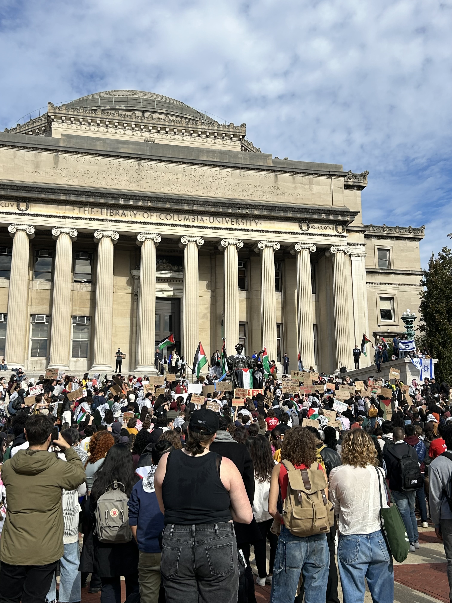
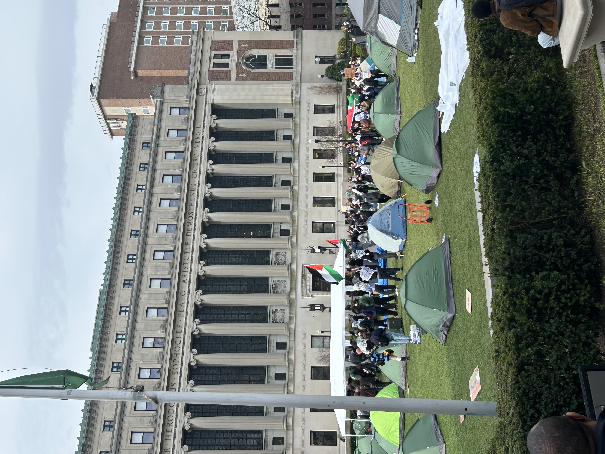

Radicals can’t just be a nuisance, they must have an ideology to follow
April 26, 2024
In the wake of the October 7th Hamas attack on Israel and the subsequent IDF campaign in Gaza, Columbia became the leading site for protests (and counter-protests) that sparked a wave of student activism across the United States.

In the immediate aftermath of Israel’s invasion into Gaza, protests on our campus occurred a few times a week and lasted for a couple hours at most. It wasn’t until the day university president, Minouche Shafik testified at her congressional hearing in Washington on April 17, that the first Gaza solidarity encampment in the nation sprouted on Columbia’s south lawn. Since then, with each day the encampment has grown in its participation and air it consumes on campus.
Following the encampments’ proliferation, I heard my peers dismissing allegations that the movement was anti-semetic or hateful, saying “it's basically Woodstock”. And there’s truth to that; students play instruments, paint posters, share meals and sleep in tents like summer camp. It’s hard not to wonder if all the years of pandemic isolation and the resulting loss of college and highschool experiences is the engine of this movement.
But in other obvious ways, it is more than that. The encampment isn’t just a place to commune—it’s undeniably political. The hourly chants of “from the river to the sea” make that clear. And yet, what strikes me about the movement isn’t just the scale and fervor of its participants, but the absence of clear, cohesive ideology behind it. What exactly are the protesters fighting for? On the surface level it’s easy to answer this question: divestment. Divestment of university endowment funds from companies that support or profit from Israel’s military.
But here is where my critique lies. Modern social movements, including this one, often struggle to make lasting gains because there’s no substantial production of knowledge behind them. Where are the new ideas, the intellectual framework that movements like these require to truly challenge the status quo? There’s no intellectual forum, and there’s certainly no discourse. You’re either in support of the encampment and #FreePalestine, or you’re a pro-colonial bigot. There’s a fixation on divestment, but few are talking about the complexities - about Israeli sovereignty, democracy, or Hamas’s plans for Palestinian statehood.
After spending my first semester in Professor Guridy’s American Social Movements seminar, I can’t help but view this protest through a broader historical lens. Successful social movements have always had clear goals, leaders, and ideologies that drove them forward. Without that structure, protests can quickly become performative- more about optics than real change. While representation is undeniably critical for the Palestinian people, the outrage is mal-targeted on Columbia and President Shafik. While the current push for "apartheid divestment" may be well-intentioned, divestment alone isn’t a strategy for long-term success. What’s the plan beyond cutting financial ties with these companies? What’s the broader vision? There doesn’t seem to be one.

If the student activists want the movement to endure, they need to ask hard questions: What do we stand for beyond immediate outrage and how can we turn this moment into a sustained movement that pushes for real humanitarian solutions.
Tensions have surely escalated this morning with police-stationining and entry restriction at all access points on campus. The dialogue among my peers was pure outrage at these security measures and disgust in Shafik for her hasty call upon the NYPD (compared to President Grayson Kirk who waited a week during the 1968 Columbia student protests). And I share their sentiment, bringing police force onto our campus to not only shut down the encampment but regulate campus movement and close our gates, was a traumatic and brutal response to expressions of activism. But the overwhelming consensus in my program not only silences alternative views, but stigmatizes them. With no other ideology than you’re with us or you’re not, there has been no debate, no interrogation, and no ideas on how to end the encampment with all actors satisfied.
But what’s missing from this dialogue is any serious engagement with humanitarian solutions. With the protest movement stuck in a loop of slogans and demands for divestment, we’re left without a roadmap for resolution and a lid on humanitarian and policy innovations.
Radicals can’t just be a nuisance; they must have an ideology to follow. Without that, this protest risks being remembered as a fleeting moment rather than a meaningful movement.